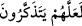
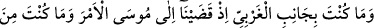
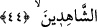
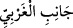
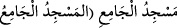
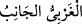
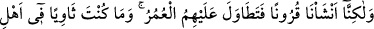
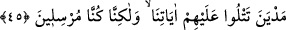

özelliği ile önceki ilâhi kitaplardan farklıdır, çünkü onlarda topluma yönelik ahkâm
bulunmuyor ve sadece Allah’a îman ve tevhid konuları yer alıyordu. Bu yüzden onlar
için suhuf (sahîfeler) denilmiştir; onlara “kitap” denilmesi mecâzîdir.
“Ve rahmet olarak o Kitab’ı (Tevrat’ı) vermişizdir.” Öyle ki onunla amel eden
Allah’ın rahmetine nâil olur.
“__WORD__ (düşünüp öğüt alsınlar)”, yâni onlardan beklenen kendilerine yapılan
nasihatlardan ibret alıp bu hâl üzere bulunsunlar diye… demektir.
Hadiste buyrulmuştur ki: “Allah Teâlâ Tevrât’ı yeryüzüne indirdiği günden beri
maymunlara çevrilen (mesh edilen) karye ehlinden başka hiçbir nesli, ümmeti veya
bölge halkını gökten inen bir azabla helâk etmemiştir. Görmezmisin Allah Teâlâ
buyurur ki: “Mûsâ’ya kitabı verdik... (el-Kasas, 28/ 43).”[111]
44. (Rasûlüm!) Mûsâ’ya emrimizi vahyettiğimiz sırada, sen batı yönünde
bulunmuyordun ve (o hadiseyi) görenlerden de değildin.
Ey Muhammed, “Mûsâ’ya emrimizi” yâni nübüvvet işini ve Tevrat’ın verilmesini
“vahyettiğimiz sırada, sen batı yönünde” yâni dağın kenarında veya vaadin
gerçekleştiği ve Mûsâ’nın Rabbiyle münâcât ettiği mekânda “bulunmuyordun”
“__WORD__ ifâdesinde ya mevsuf hazfedilip sıfat onun yerini almış ya da “
)” de olduğu gibi aslı “__WORD__ olup sıfat mevsufuna izâfe
edilmiştir. Her iki takdire göre de Turdağı batıdadır.
“Ve (o hadiseyi) görenlerden de” yâni vahye şâhid olanlardan da “değildin.”
Vahye şâhid olanlar, mîkât (belirlenen vakit) için seçilen yetmiş kişidir ve onlardan
beklenen, Mûsâ (a.s.)’ın işine, başından geçen hallere, Allah’ın onun için Tevrat’ı
yazmasına şâhid olup insanlara haber vermeleridir.
Burada özellikle Peygamber (s.a.)’in o hâdiseyi görenlerden olmadığına vurgu
yapılmasından maksad, onun (s.a.) bu olayı haber vermesi, vahyin dışında bilinmesi
mümkün olmayan muğayyebât türü haberler kabilinden olduğunun bilinmesidir. Bunun
içindir ki bir sonraki âyette o hadise ile Peygamber (s.a.) arasında uzun bir zaman
dilimi geçtiğine dikkat çekilmiş ve şöyle buyrulmuştur :